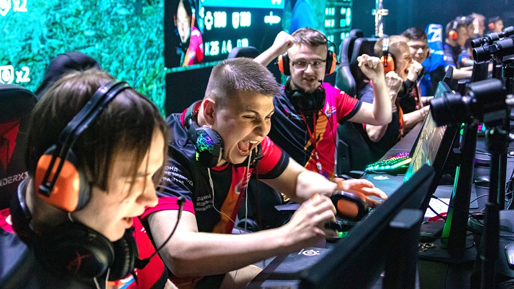

История и развитие киберспорта
Предпосылки к возникновению виртуального спорта зародились еще до эпохи Интернета.
Первый публичный киберспортивный турнир состоялся в США в октябре 1972 году. Преподаватели и студенты Стэнфордского университета собрались в лаборатории изучения искусственного интеллекта, чтобы посоревноваться в игре Spacewar – одной из первых цифровых видеоигр, смысл которой заключался в том, чтобы маневрировать космическим кораблем, пытаясь уничтожить корабль соперника.
Турнир включал одиночный зачет, командные 2×2 и FFA (каждый сам за себя) режимы, игроки состязались на игровых автоматах.
Победителем считался тот игрок или команда, который набрал наибольшее количество очков. В аппаратах был встроен рейтинг, поэтому каждый так или иначе стремился оказаться в списке лучших.
В 1981 году бизнесмен Уолтер Дей стал первым, кто организовал учет истории игровых достижений американских игроков в компьютерные игры. А в 1983 году он собрал собственную команду, менеджером которой выступал на различных игровых турнирах. Благодаря активному участию Дея появилось также ТВ-шоу о виртуальном спорте.
Локальные компьютерные сети дали крупный толчок развитию киберспорта, ведь у игроков появилась возможность напрямую соревноваться друг с другом. До этого спортсменам приходилось играть по очереди, а победителя определяло количество заработанных очков. Теперь же соревнования перешли на качественно новый уровень.
Огромную роль в истории компьютерного спорта сыграло создание культовых видеоигр 90-х:
lWofenstein;
DOOM;
Quake.

Но большинство турниров еще оставалось местным либо региональным развлечением. В 1996 году на первый турнир QuakeCon от id Software (американская компания-разработчик компьютерных игр) пришло только 40 человек. Начиная с этого периода соревнования на PC (персональных компьютерах) начали активно продвигать. Это не оставило игроков и болельщиков равнодушными.
В 1999 году в США была зарегистрирована первая в мире киберспортивная организация — Evil Geniuses.
Первый турнир The International, организованный компанией Valve в 2011 году, оживил индустрию. При поддержке разработчиков видеоигр сформировалась Лига из небольших, но регулярных соревнований. Призовые суммы были скромные, но киберспортсмены наконец-то смогли получать постоянный доход.
Сейчас трансляции The International и турниров по Counter Strike собирают миллионы зрителей.
Новости киберспорта
- -League of Legends: победа T1 на Worlds 2023, новый герой и другое
- -Team Spirit стала двукратным чемпионом The International
- -ActiBlizz отказывается от одной из самых амбициозных затей в своей истории — Overwatch League